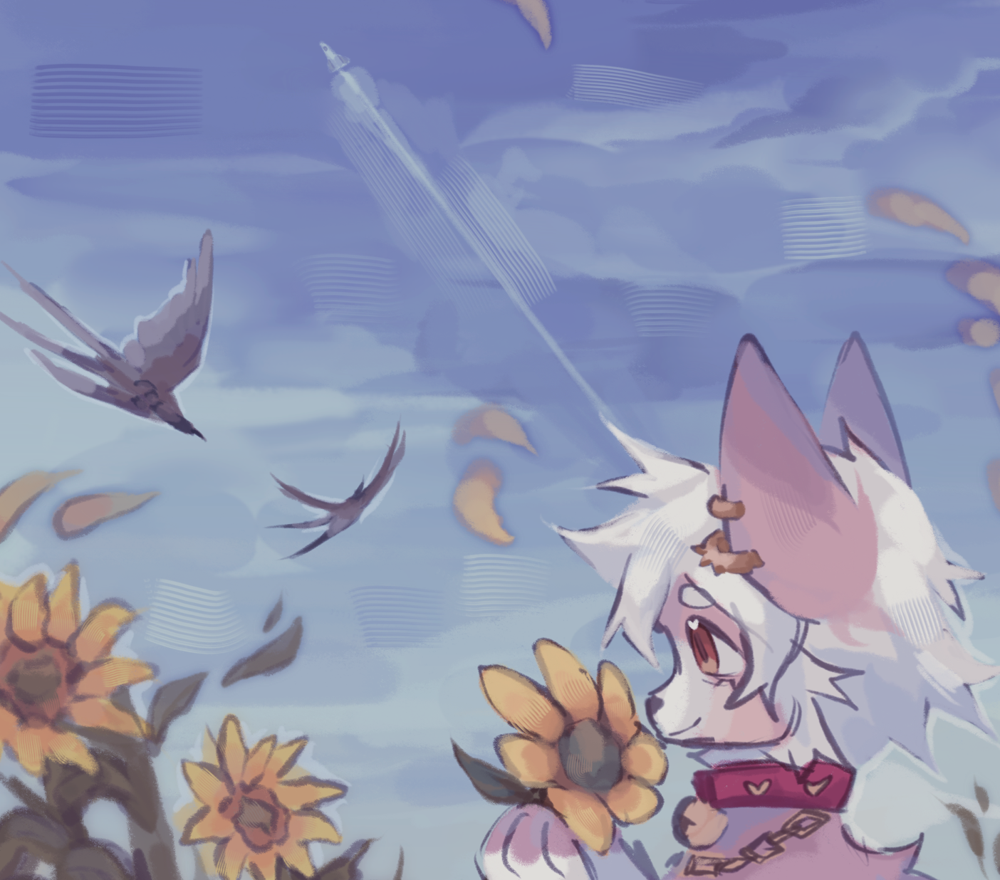

kumo's space
a personal digital haven
blinkies!!
step into the sun and watch the clouds roll by
artwork by panavia
hello and welcome to my little internet space! feel free to poke around, stay a while, and grab a cup of tea ♡ nothing corporate or rushed here, just vibes (⌒‿⌒)
this site is best viewed on desktop. some things may look odd or break on mobile.
want to follow my neocities? click here!
site last updated on 2/28/2025. assuming i didn't forget to edit the date (╥_╥)
i'm kumori, also known as kumo. i like to create things! i'm studying software engineering in university, and my goal is to work in either web development or game development.
i do commissions of all kinds! if you're interested in commissioning me for something, please contact me! i'm always looking for work.
here's a link to my ko-fi in case you'd like an easy way to commission me directly!
likes
- ♡ art
- ♡ writing and reading
- ♡ dev
- ♡ indie everything
- ♡ sweets
dislikes
- - heat
- - crowds
- - strong smells
- - loud / harsh sounds
- - bright lights